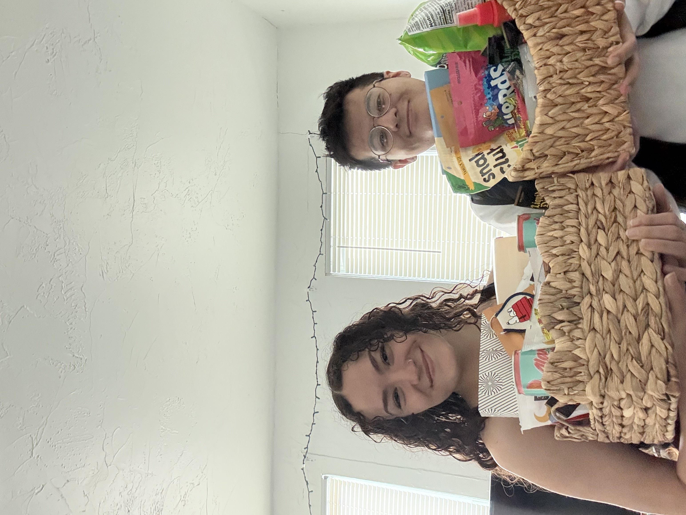

Tank you saying yes to being my Valentine! (MUAHAHAHAHAHA - does vocal stim) I love you so so much baby ♾️ + 1 🤍 You make me so happy baby, and I am so exited to celebrate this day of love with you!
